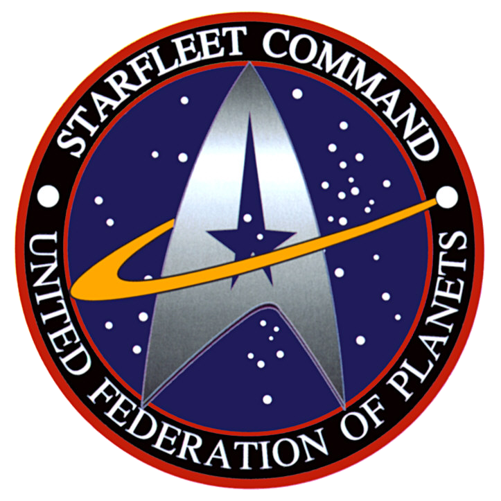

L'univers Star Trek dépeint un futur optimiste, utopique, dans lequel l'humanité a éradiqué la maladie, l'injustice, le racisme, la pauvreté, l'intolérance et la guerre sur Terre, où la paix règne. Elle s'est également unie à d'autres espèces intelligentes de la galaxie. Les personnages explorent l'espace, à la recherche de nouveaux mondes et de nouvelles civilisations et s'aventurent « là où aucun homme, là où personne, n'est jamais allé ».
Bien que la première série n'ait pas rencontré un grand succès lors de sa diffusion, il est apparu que cet univers suscitait beaucoup d'enthousiasme chez un public particulier de fans, les Trekkies ou Trekkers scolarisés. Ces amateurs inconditionnels ont fait le succès des rediffusions et créé un marché pour les séries suivantes et autres films fondés sur le travail de Gene Roddenberry. Star Trek reste, au xxie siècle, un des divertissements de science-fiction les plus populaires de la télévision.
 Emblème de StarfleetLes histoires de Star Trek font partie intégrante de la culture américaine. À la suite d'une opération de lobbying des fans de la série, la NASA a accepté de nommer Enterprise le prototype de la navette spatiale.
Plusieurs épisodes de la première série se fondent sur une confrontation entre une puissance supérieure, généralement une race extraterrestre avancée (possédant souvent de formidables pouvoirs mentaux), avec une technologie de pointe, et un être humain ayant acquis, dans des circonstances particulières, des pouvoirs inhabituels, parfois avec un dieu. Souvent, le but de la puissance en question est d'asservir (ou de détruire) le vaisseau et son équipage, mais tous deux sont sauvés par le capitaine James T. Kirk (James R. Kirk dans le premier épisode de la série, Où l'homme dépasse l'homme), qui est interprété par l'acteur William Shatner. Un cas exceptionnel est l'épisode fameux des Tribbles qui, avec humour, fait entrevoir une autre série de thèmes possibles sur les divers points de vue des espèces ou sur l'environnement. Parfois le scénario est inversé, et les entités « supérieures » « moralisent » les humains (Arena, Les Arbitres du cosmos, L'Impasse). Certains épisodes font appel à des scénaristes réputés (par exemple Robert Bloch sur trois épisodes, dont celui concernant Jack l'Éventreur).
Il n'y a pas d'histoire se prolongeant tout le long de la série originale (contrairement à la série dérivée Deep Space Nine, ou, dans une moindre mesure, Voyager), chaque épisode formant une structure close, séparée des autres, le seul élément de continuité étant la distribution et certains ennemis récurrents comme les Klingons. Tous les épisodes sont au format 52 minutes, sauf l'épisode La Ménagerie, en 2 x 52 minutes, en raison de la réutilisation du premier pilote The Cage, qui fait référence à un couple (équipage, vaisseau) plus ancien.
Drapeau de la Fédération des planètes unies.La société utopique, la Fédération des planètes unies (FPU), dépeinte dans Star Trek, se fonde sur une « économie de l'abondance », autorisant un progrès des sciences et des technologies. Cette abondance permet, aussi, à chacun, de satisfaire presque tous ses besoins et désirs. Le travail et le commerce ne sont pas nécessaires, l'argent n'existe plus. Les émotions négatives, comme l'avarice ou la jalousie, y sont quasiment inexistantes.
Roddenberry était partisan d'une politique égalitaire et a fréquemment utilisé les épisodes pour présenter sa vision d'une société utopique, basée sur ces principes. La série originale, par exemple, possède un membre d'équipage féminin afro-américain : Nyota Uhura, rôle interprété par l'actrice Nichelle Nichols, une des premières femmes afro-américaines à tenir un rôle principal à la télévision américaine. Il fait également intervenir un personnage originaire de Russie — Pavel Chekov, interprété par Walter Koenig — et ce en pleine guerre froide entre les États-Unis et l'Union soviétique. Le premier officier vulcain M. Spock, joué par Leonard Nimoy, n'a pas eu, tout d'abord, les faveurs des cadres de la chaîne sous le prétexte que son aspect vaguement satanique pouvait s'avérer trop inquiétant pour le public, mais M. Spock est devenu l'un des personnages les plus populaires de la série originale.
Pour illustrer cette vision idéaliste, le premier pilote de la série, The Cage, a été refusé parce que le commandant en second de l'Enterprise était joué par une femme (Majel Barrett, alias l'infirmière Christine Chapel dans Star Trek puis Lwaxana Troi dans Star Trek : La Nouvelle Génération), ce que la Paramount a jugé « irréaliste ».
De même, pour faire accepter à la Paramount l'actrice noire Nichelle Nichols, qui était pourtant une artiste reconnue en Angleterre, Roddenberry a dû recourir à un chantage devenu classique : « She stays or I leave! » (« Elle reste ou je pars ! »). En outre, le baiser échangé entre celle-ci et le capitaine Kirk, dans l'épisode 3-10 (La Descendance), met alors en œuvre un contrôle mental comme prétexte pour briser ce tabou du premier baiser interracial de la télévision américaine4,5,6. L'épisode fut diffusé le 22 novembre 1968, alors que la sortie nationale du film Devine qui vient dîner ? datait déjà cependant du 12 décembre 1967. Un courrier impressionnant fut à l'époque adressé à la Paramount qui craint même, un moment, une fin de diffusion dans les États du Sud. Lors d'une rencontre particulière entre Nichelle Nichols et Martin Luther King, ce dernier dissuada l'actrice de quitter la série, arguant qu'elle représentait une icône importante pour les mouvements noir et féminin. Son personnage a été recruté uniquement pour ses capacités, et sur aucun autre critère à bord de l'Enterprise7. En pleine guerre froide, la série présente également le Russe Chekov et l'Américain Kirk travaillant sereinement avec le Japonais Sulu8.
Le vaisseau spatial Enterprise du capitaine Kirk, chargé d'une mission d'exploration interstellaire de cinq ans (réplique située dans la ville de Vulcan, Alberta, Canada). Presque dix années se sont écoulées entre la fin de la première série et le premier film de cinéma. Dans l'intervalle, de nombreux romans ont été publiés par des auteurs multiples. L'univers de Star Trek a survécu à une longue traversée audiovisuelle du désert, grâce à l'écriture. Il s'est également enrichi par le partage et le travail collectif. Sauvée une première fois par ses fans, maintenue et développée par une collectivité informelle d'auteurs, l'utopie de Star Trek se trouve autant dans sa naissance que dans son contenu.
En 1987, une nouvelle série est lancée, Star Trek : La Nouvelle Génération (Star Trek: The Next Generation ou ST : TNG), comportant un nouvel équipage. Contrairement à la série originelle, ST : TNG décrit un univers dans lequel la plupart des races rencontrées sont équivalentes, d'un point de vue technologique, et un nombre important d'épisodes n'est plus basé sur le concept de « premier contact », mais sur de nouveaux arguments, tels que les paradoxes du voyage temporel, ainsi que les univers parallèles.
Enfin, cette série connaît des liens historiques forts entre les épisodes, avec des objets ou des personnages qui apparaissent au cours de plusieurs épisodes (et même provenant de saisons précédentes), donnant à la série une cohérence plus forte. Des personnages de la série originelle font aussi leur apparition.
“It is possible to commit no errors and still lose. That is not a weakness. That is life.”